狭い空間で寝る、働く、整える。宇宙居住と同じく、制約が設計を sharpen する。
Premise
宇宙を、宇宙だけで終わらせない。
渡鳥ジョニーの関心は、月や衛星そのものだけではなく、その手前にある「地上の暮らしの再設計」。車中泊、移動する住居、遠隔地滞在、インフラのない場所での生活実験を、社会実装の入口として扱ってきた。
停まった場所が、家になる。
その延長に、宇宙がある。
Vanlife / VANLDK
移動する居住空間を、自分で実験していた。
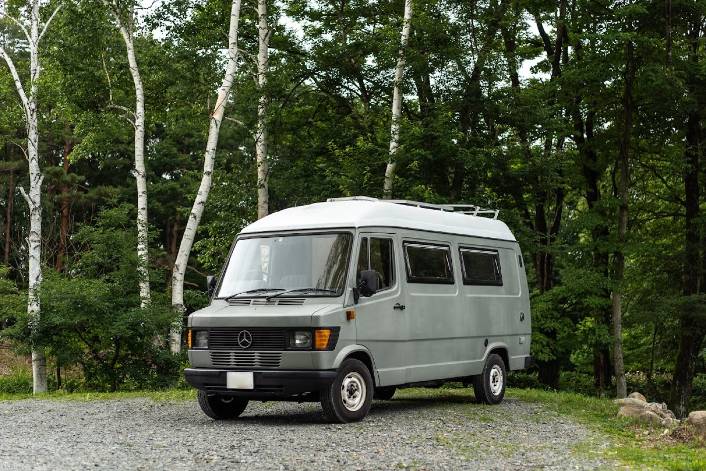
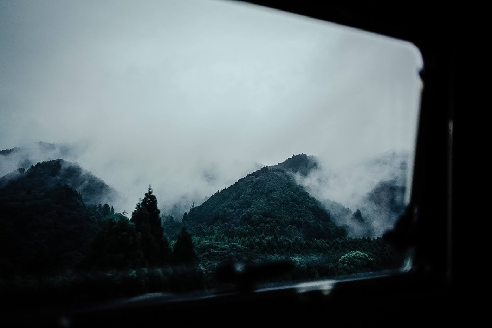
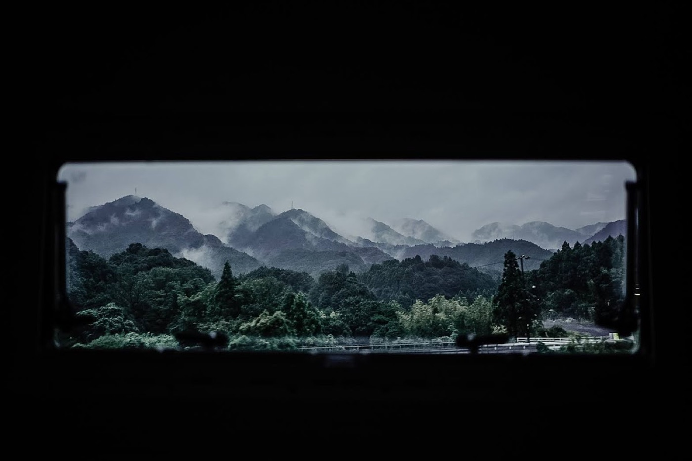
電気・水・風呂・洗濯・食事を、外部インフラとの関係から組み直す。
個人の生活実験を、企業・自治体・研究開発の実証テーマへ変換する。
JAXA / LAC Context
つくばVAN泊、JAXA実証、宇宙と暮らしの接続。
LAC時代に、移動・滞在・暮らしの文脈から宇宙領域に接続する実証に関わった。公開会話では、提携や案件化を断定せず「宇宙と地上のあいだを翻訳する経験」として話す。
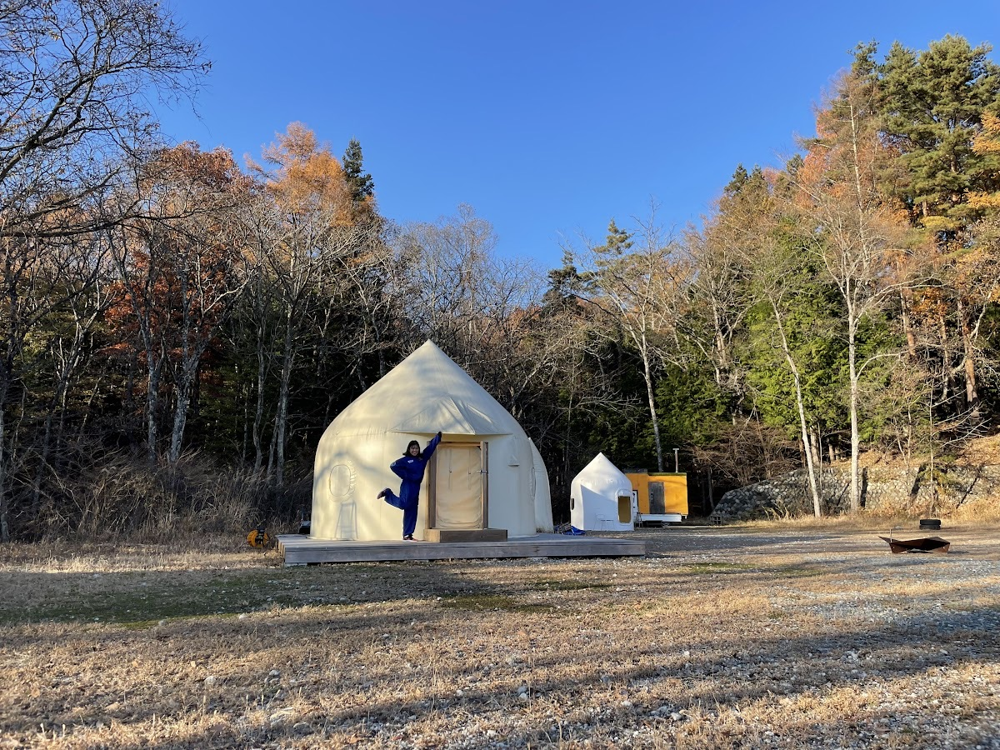
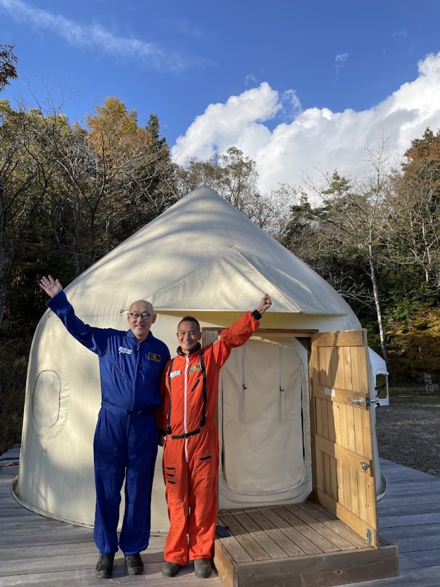
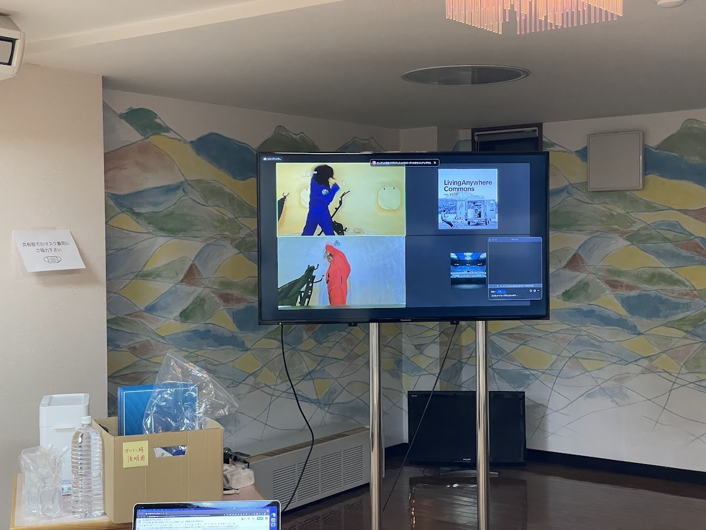
注: このページは会話用の公開サマリ。非公開の紹介経路や個別案件の詳細は掲載していません。
INNFRA
宇宙側の技術を、地上側の運用へ落とす。
INNFRAでは、地域インフラ、オフグリッド、水循環、施設運用、現場実装を扱う。宇宙技術を「使える地上インフラ」に変換するなら、課題発見、PoC設計、運用設計、ダッシュボード化が接点になる。
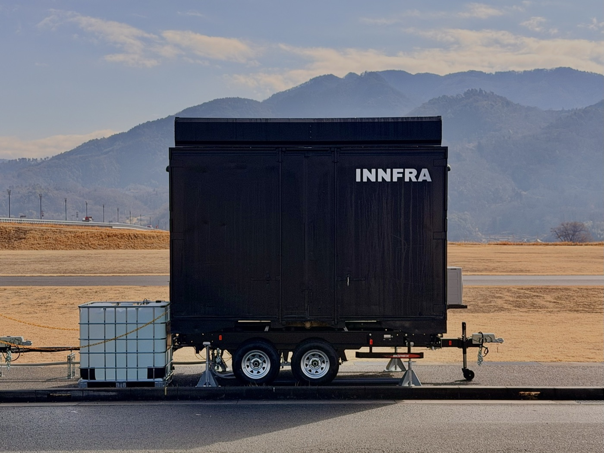
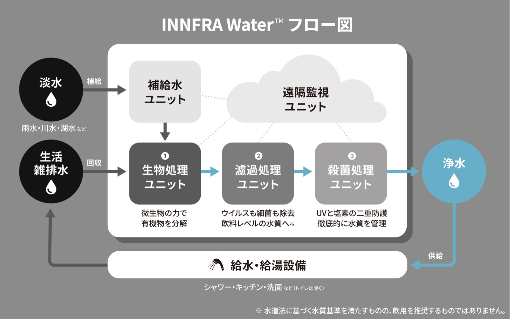
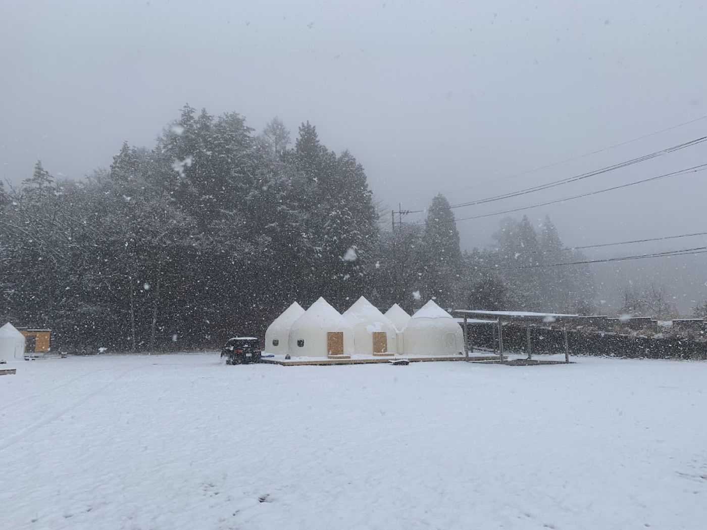
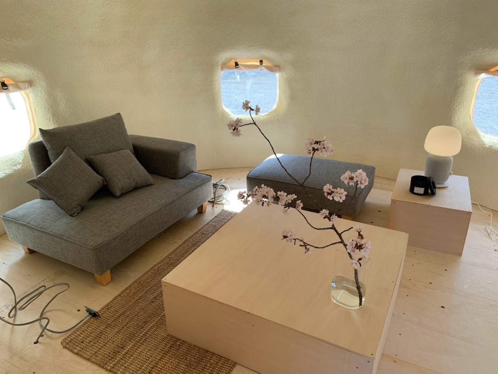
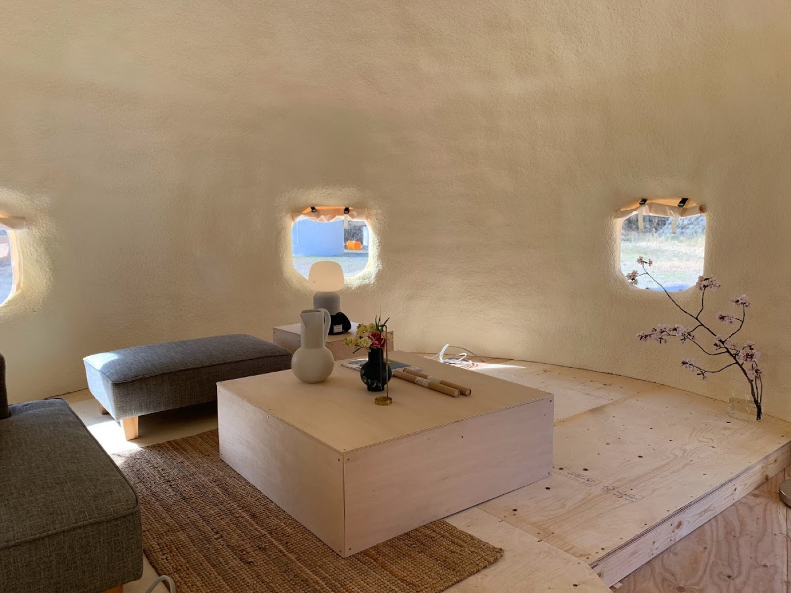
Talk Script
その場で話すなら、この順番。
以前、LAC時代にJAXA/LIFULL/J-SPARC周辺の文脈で、暮らし・移動・滞在と宇宙の接点になる実証に関わっていました。
当時から「バンライフは宇宙の一歩手前」だと思っていて、閉鎖環境、自律生活、遠隔地滞在、オフグリッドは宇宙と地上インフラのあいだにあるテーマだと見ています。
今はINNFRAで、地域インフラ、水循環、施設運用、現場実装のプロデュースをしています。宇宙技術を地上の暮らし・防災・地域課題に翻訳する接点を探しています。
今日聞きたいのは、衛星データ、宇宙デジタルツイン、遠隔地滞在、防災拠点、人材育成のうち、異業種が最初に入るならどこが現実的か、です。